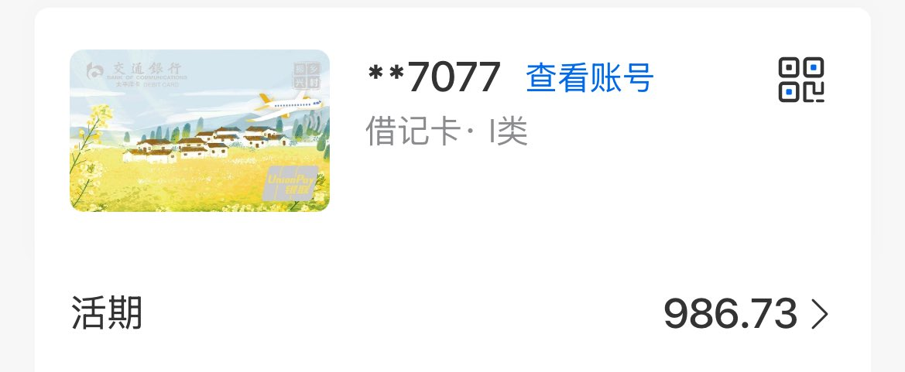

青石巷🍃🕊️
@qingshixiang258
然后第一个月发工资，那时候真的很激动！这是我自己第一次完全靠自己拿到的工资！拿到的时候眼睛湿湿的，给姐姐爸妈他们发了红包买了自己想要的东西感觉真的很棒❤️

青石巷🍃🕊️
@qingshixiang258
天呐青石巷，你居然完全靠自己挣到了第一份工资！你真了不起！ https://t.co/izg1kcnFn0
青石巷🍃🕊️
@qingshixiang258
然后就到了现在这家公司，公司的前辈都是很好的人，对我们都很好，我很喜欢ta们❤️